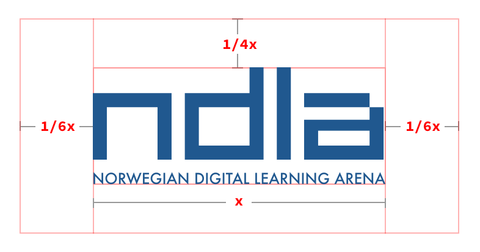

Kapittel 9:
Bruk av logoer
Forfatter: Ivar Borthen
Bruk av logoer kan ha rettslige sider i forbindelse med gjengivelsen (varemerket og opphavsretten) og krav til bruk.
Andre logoer på NDLA
Bruk logo til å illustrere en sak kun når det er helt nødvendig - hvis ikke, finn andre måter å illustrere saken på. Vær samtidig oppmerksom på at en logo er et grafisk element som kan forandre seg over tid.
NDLA logo
Ved bruk av NDLA logo er det viktig å følge logoens retningslinjer. Husk at det skal være nok luft rundt logoen og at logoen (primært) skal brukes i NDLA-blå på hvit eller veldig lys grå bakgrunn.
Luft og avstand
Luft rundt logoen bør være minimum 1/6 del av logoen sin bredde (x) på sidene og 1/4 av logoens bredde over og under.
Logo eksempler og varianter
På hvit eller lys grå bakgrunn:
På mørk bakgrunn:
Sort/hvit logo: